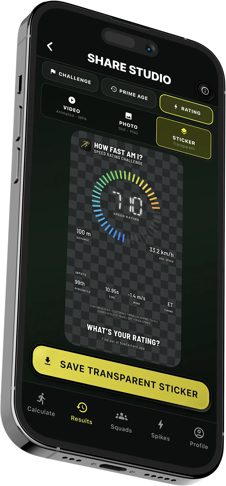

타이머된 스프린트를 변환하세요
거리와 시간부터 시작하세요. 더 많은 정보가 필요하다면 시작 유형, 타iming 방법, 표면, 신발, 바람, 고도를 추가하세요.
스프린트 시간 변환기
30m, 60m 또는 다른 거리의 기록을 쟀나요? 거리와 시간을 입력하면 100m 예상 기록을 볼 수 있습니다. 출발 방식, 계측 방식, 주로 표면을 알려 주면 조건에 맞는 예측을 얻을 수 있습니다.
가지 착용 가능한 기기 없이도 됩니다. 거리와 시간을 입력해 보세요.

100m 추정값을 사용하여 짧은 스프린트를 공통 척도에 올리고, 시간이 지남에 따라 성과가 어떻게 변하는지 추적하세요.
거리와 시간부터 시작하세요. 더 많은 정보가 필요하다면 시작 유형, 타iming 방법, 표면, 신발, 바람, 고도를 추가하세요.
마일이나 키로미터당 평균 속도를 계산하고, 속도 점수, 나이 조정된 비교, 공유 가능한 결과와 함께 맥락을 넣으세요.
선수들을 채용하고, 상대 팀을 형성하고, 속성들을 개발하며, 개인 최고 기록을 추구하고, 리더보드를 상승시키며, 경로를 따라 보adge를 수집하세요.
기록한 거리와 시간을 입력하세요. 빠른 추정을 위해 간단 모드를 사용하세요.
상세 모드에서는 앱이 어떻게 시작되었고 시계가 어떻게 트리거 되었는지 입력해 주세요. 날리기 시작은 러시를 주고, 서서 시작은 정지 상태에서 가속을 시작합니다.
예상 시간을 사용하여 다양한 거리의 스프린트를 비교하고 진척을 추적할 수 있습니다.

계산 예시: 60m를 7.50초에 달렸다면 100m 예상 기록은 11.64초입니다.
앱에서 ‘Track Meet’ 모드를 열고 ‘Male’을 선택한 뒤 거리 60m와 시간 7.50초를 입력하세요. 스타팅 블록, 전자 계측, 육상 스파이크, 마른 고무 트랙, 무풍을 선택하고 나이와 고도는 비워 두세요.
11.64초는 예상 기록입니다. 공식 100m 기록을 내려면 실제 100m 경주에서 시간을 계측해야 합니다.


이용 방법 하나
40야드를 4.50초에 달렸다면 전체 구간 평균 속도는 18.2 mph(29.3 km/h)입니다. 앱의 40야드 모드를 사용하면 계측 방식과 주행 조건을 반영한 100m 예상 기록을 확인할 수 있습니다.


스피드 공유
단거리 달리기 기록을 배경이 투명한 스티커로 저장해 자신의 사진이나 영상에 붙이세요. 그다음 Instagram 스토리에 공유하거나 TikTok에 게시할 수 있습니다. 기록만 별도의 영상으로 저장할 수도 있습니다.

쿼드 레이스
보완적인 강점을 가진 레이스 팀을 조합하세요. 형태를 관리하고, 전환을 놀라게 하며, 경기 조건을 처리하고, 네 명이 필요할 때 실제로 성과를 낼 수 있는지 확인하세요.